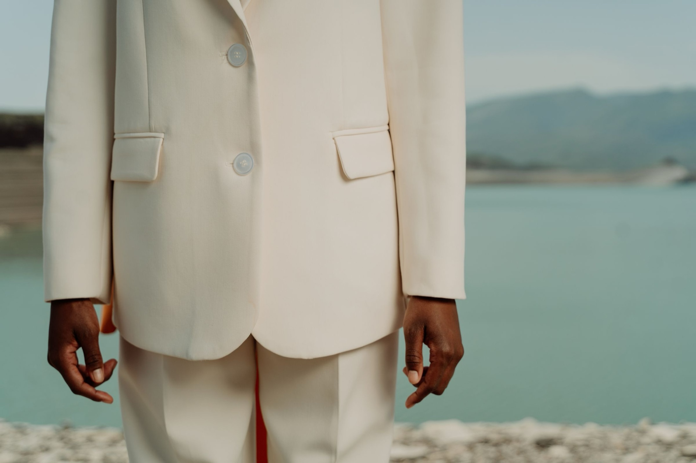
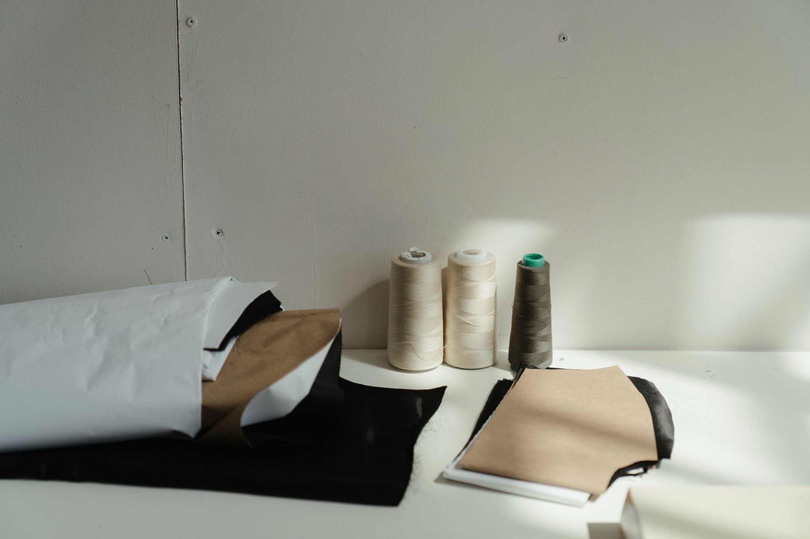
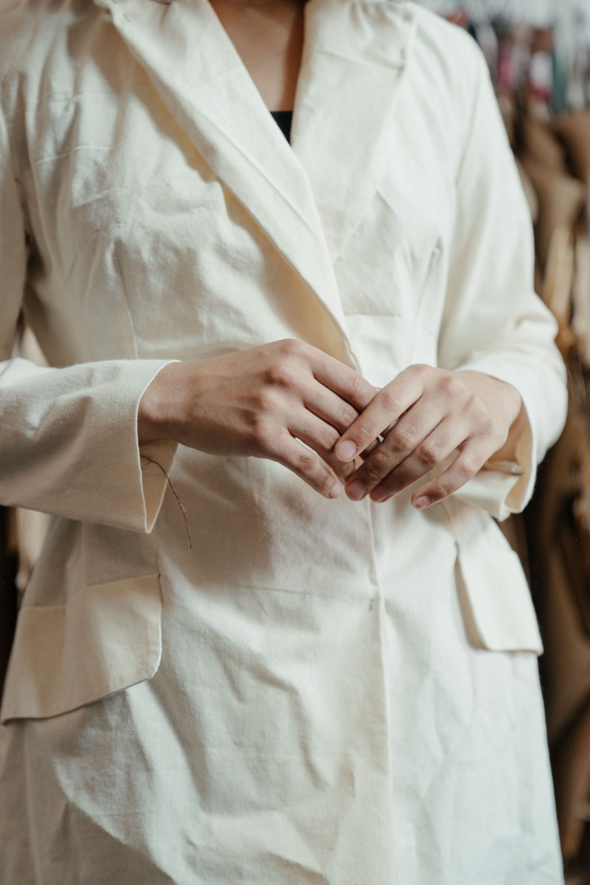
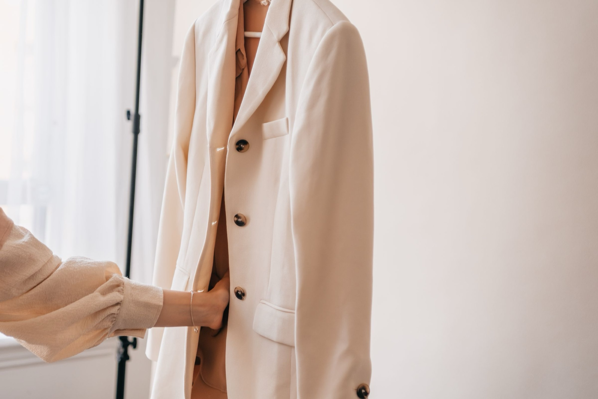
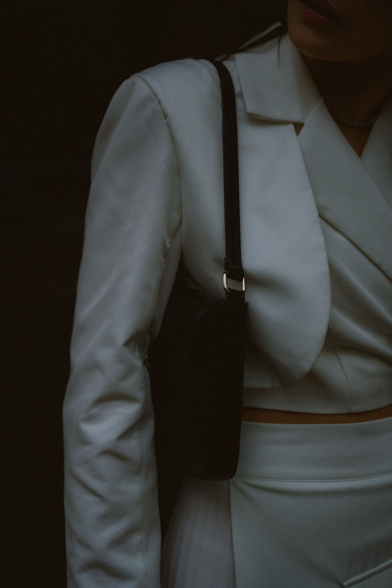
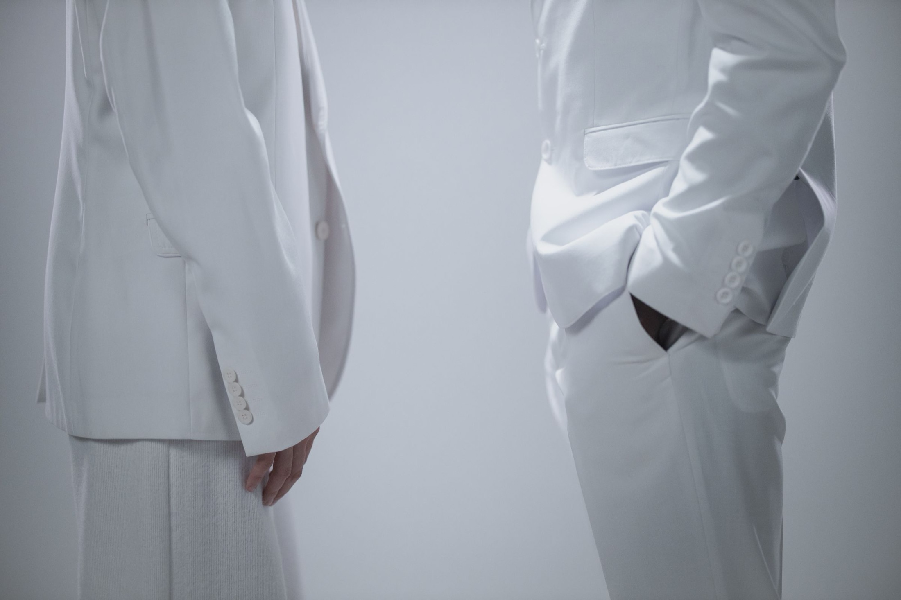
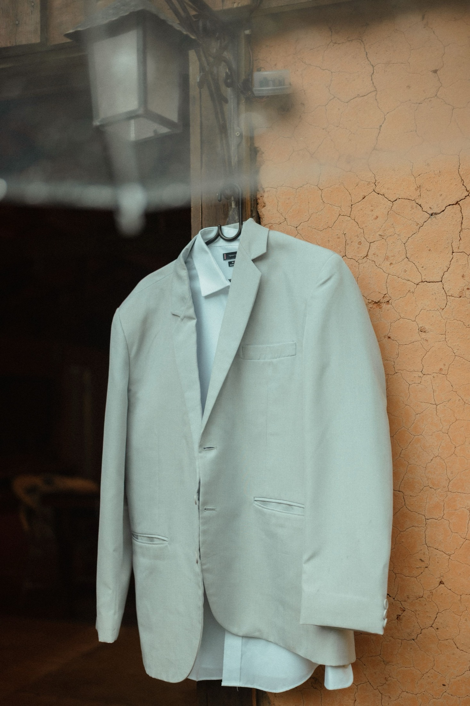
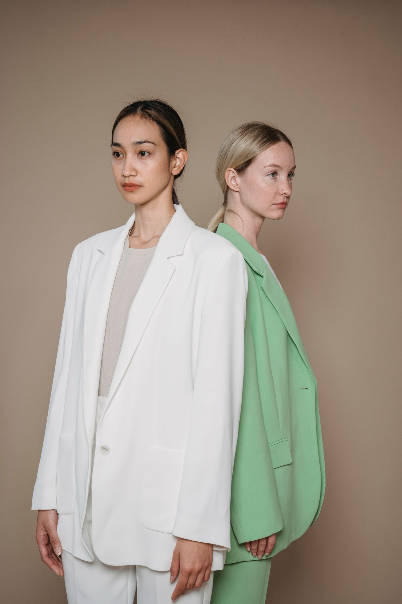
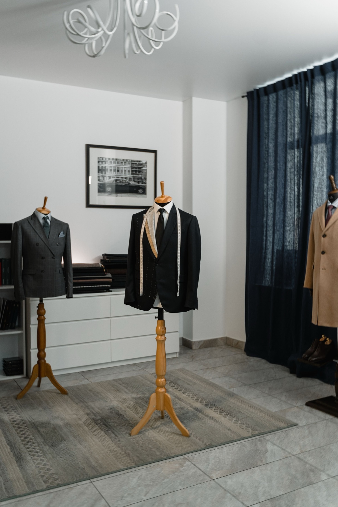
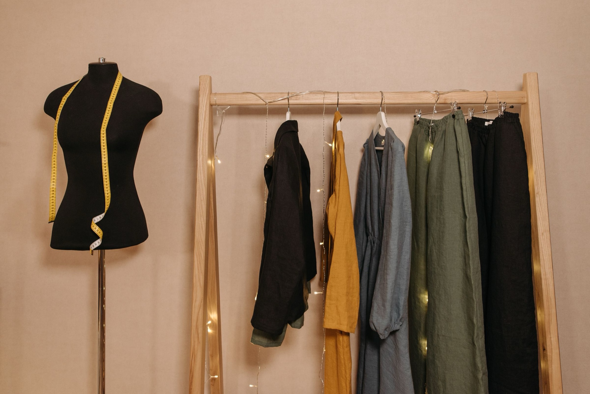

베스티아 아틀리에
신중하게 지은 옷, 오래도록 간직하도록.
매일 입는 옷이라면, 평생을 함께할 자격이 있습니다.
VESTIA는 기성복을 맞춤복처럼 설계하는, 절제된 럭셔리 아틀리에입니다.
모든 VESTIA 의상은 천연 장섬유 원단으로 재단하고 손으로 마감해, 한 벌의 옷이 한 시즌이 아니라 수십 년 동안 입고 고쳐 입고 물려줄 수 있도록 만듭니다.
피팅 예약하기베스티아의 본질
장인의 손끝과 영속성이 만나는 곳
원단에서 패턴으로, 그리고 옷으로.
오래 입기 위해 설계된 공정, 입는 옷이 곧 간직하는 옷이 되도록.



원단
패턴
완성
매일 입지만, 결코 바래지 않도록.
대부분의 옷은 언젠가 버려지도록 만들어집니다. 우리는 그것이 좋은 원단의 낭비라고 생각합니다.
VESTIA의 옷은 고쳐 입을 수 있도록 재단합니다. 솔기를 보강하고, 천연 원단을 쓰고, 뜯어서 수선한 뒤 다시 마감할 수 있는 구조로 만듭니다.
“유행은 빠르게 지나가지만,
우리는 변하지 않는 것을 만듭니다.”
당신의 옷장은 언제까지나 간직할 가치가 있습니다.






좋은 원단은 세탁할수록 부드러워지고,
잘 지은 옷은 입을수록 내 몸을 닮아갑니다.
베스티아 아틀리에 재단 노트